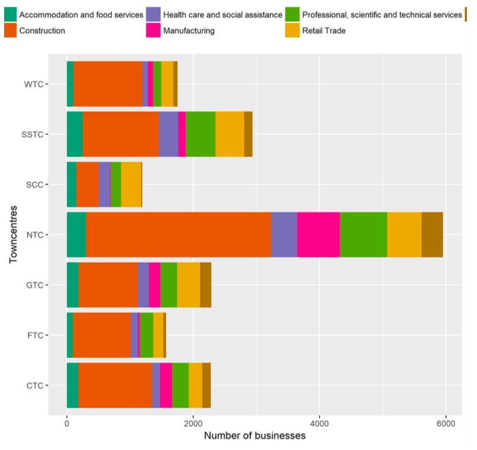

Student fellows at the University of British Columbia have partnered with the City of Surrey’s Economic Development Division to provide data analysis and visualization tools aimed at attracting future investments to each of the city’s six town centers based on their unique characteristics.
Fellows Rashedul (Rashed) Hoque, Tony Hui, Natasha Mattson and Sarah Neubauer worked with Surrey Research Analyst Kristine Garrucho and Economic Development Manager Stephen Wu to create data visualization tools that show the economic and social profile of Surrey, highlighting distinctive features in each town center that have potential impact on the city’s economy. The tools and results can help City staff, planners and investors to attract investment, support innovation, create jobs and increase the competitive advantage of the city’s work force.
The collaboration was one of four projects completed through the Data Science for Social Good (DSSG) summer program launched this year at UBC's Data Science Institute, as part of the Cascadia Urban Analytics Cooperative. The program complements the DSSG program run by the University of Washington’s eScience Institute. The Investment & Intergovernmental Project Final Report details the data cleaning and analysis processes used to create three final products.
The team created an interactive online mapping tool in a data matrix format called Visual Surrey that shows census tract-level data such as business licenses, crime rates, demographics, job postings and commercial rental listings. The data was provided directly by the City, and collected through public sources. Analytical methods included boxplots and histograms for exploratory analysis, and Principal Component Analysis (PCA) and clustering algorithms for classification, to account for variations in data collection. Computer programs included Bootstrap for the back-end, Python/ Flask to read API map data, and D3.js for styling.
Next, the team used machine learning algorithms to classify 96 census tracts into seven categories based on high dimensional similarities. They looked at key variables that differentiated each group and described the clusters based on these variables. Some of the key differentiators found were household income and education levels, along with number of commercial and home businesses.
Finally, the team performed a temporal analysis to examine determinants of business growth, as measured by a rise in the number of businesses, from 2011-2016. They examined how business growth changed across census tracts in relation to variables such as gross assessment values. Data points used included number of businesses, assessments and land values. Results indicated that home-based businesses and construction businesses were temporally related to median gross land value per square footage of private properties.
Data sources included commercial rental data posted on the real estate website SpaceList, job postings provided by WorkBC, and publicly available demographic data from the 2011 National Household Survey conducted at the census tract level by Statistics Canada. Data provided by the City consisted of home business data, commercial rental data, and commercial and industrial building permits for 2013-2017 from the Economic Development Division; as well as property listings for 2011-2012. Business data included classification by the North American Industry Classification System (NAICS). Surrey’s Open Data was used for property listings for 2013-2016 and crime data for 2011-2016 showing breaking and entering incidents with addresses (the crime data is no longer publicly available). Challenges included businesses with more than one license (for example, a gas station might have a license for an ATM machine in addition to its own) and businesses erroneously listed as having one employee because their listing was not updated after opening.
©2017 {{site.title}}. All rights reserved.